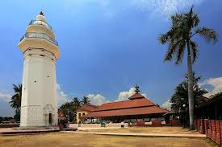

About Banten
Capital City in Serang
Banten: The Land of Warriors and Coastal Charm
Banten, located at the western tip of Java Island, is a province
with a rich history, diverse cultures, and beautiful coastal landscapes. From the historic
Banten Sultanate to its stunning beaches and unique traditions, Banten offers a captivating
blend of historical significance and natural beauty.
A History of Sultanates and Trade:
Banten's history is marked by the powerful Banten Sultanate, which
played a significant role in the region's development:
- Banten Sultanate: This sultanate, which existed for centuries, was a major trading
center in the archipelago, attracting traders from around the world.
- Historical Sites and Old Banten: Several historical sites in Old Banten provide
insights into the region's past, including the Grand Mosque of Banten and the Surosowan
Palace ruins.
- Colonial Influences: Banten also experienced colonial influences from European
powers, particularly the Dutch.
Diverse Cultures and Traditions:
Banten is home to a diverse population with various ethnic groups
and cultural traditions:
- Sundanese and Bantenese Cultures: The dominant cultures in Banten are Sundanese and
Bantenese, each with its own distinct language, customs, and traditions.
- Debus: This unique martial art, involving self-inflicted injuries, is a distinctive
cultural tradition of Banten.
- Traditional Arts and Crafts: Banten also has various traditional arts and crafts,
including weaving, batik, and wood carving.
Natural Beauty and Coastal Landscapes:
Banten offers diverse natural landscapes, particularly along its
coastline:
- Beaches and Coastal Areas: Banten's coastline offers beautiful beaches, suitable for
various water activities and relaxation. Anyer and Carita are popular beach destinations.
- Ujung Kulon National Park: This national park, a UNESCO World Heritage Site, protects
a significant area of rainforest and is home to the endangered Javan rhinoceros.
- Islands: Several small islands off the coast of Banten offer beautiful scenery and
diving opportunities.
Economic Potential:
Banten's economy is supported by:
- Industry and Manufacturing: Banten is a major industrial and manufacturing center in
Indonesia, particularly in the Cilegon area.
- Tourism: Tourism, particularly coastal and historical tourism, is a growing sector.
- Fisheries: Fisheries also contribute to the local economy, given the province's
extensive coastline.
Banten: A Blend of History, Nature, and Culture
Banten offers a diverse and captivating experience for visitors,
combining rich history, unique cultural traditions, and beautiful natural landscapes. Here's
a deeper look:
Historical Perspective
Banten Sultanate and its Legacy: The Banten Sultanate's influence is still visible in
the region's historical sites and cultural traditions.
Cultural Heritage
Sundanese and Bantenese Cultures: The blend of Sundanese and Bantenese cultures,
along with other influences, creates a rich cultural tapestry.
Debus and Other Traditional Arts: Debus, along with other traditional art forms, is a
distinctive part of Banten's cultural heritage.
Natural Wonders and Tourism
Beaches, National Parks, and Islands: Banten offers a variety of natural attractions,
from beautiful beaches and coastal areas to Ujung Kulon National Park and surrounding
islands.
Banten Today
Banten is developing its economy while preserving its rich
historical and cultural heritage. The province is a major industrial and tourist destination
in Indonesia.
